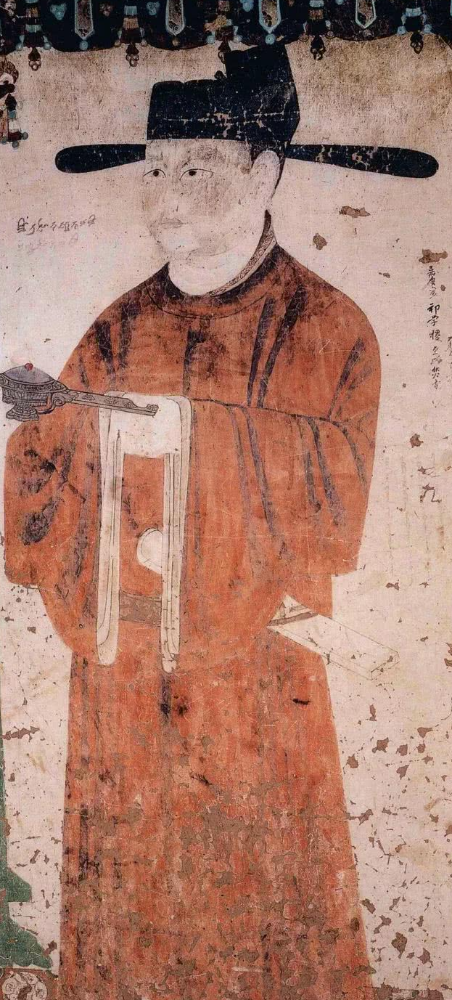

Donor Frescoes
Dunhuang frescoes are the main components of Dunhuang art. They are rich in content, huge in scale, and exquisite in skill. They are best known of the Buddha grottoes, however, there is a kind of murals called donors in the frescoes, which have unique artistic value and research value. It is the donors in these murals that have been handed down from generation to generation, digging into grottoes, building Buddha statues, and painting murals, and finally created the brilliant and brilliant Dunhuang culture. Due to its completeness and continuity, these donor frescoes have become an important historical material for studying Tang Dynasty costumes.
Move the len on the bottom left corner. Can you find the Donor?
Below the Buddhist stories frescoes, there are often men and women neatly arranged in rows, the small ones are only a few inches, and the heights are up to a few feet. Among them are powerful governors and ordinary civilians. These figures have all contributed funds for the construction of the cave. They painted their images on the wall, indicating that the Buddha statues of the cave were all supported by them, so they are called cave owners, and they are also called donors.
In order to devoutly worship the Buddha, always provide support and merit, and also show their own fame and retain their names for future generations. Portraits of these donors are painted in their caves. These portraits are called donor portraits. These precious portraits record the dress status of people of different identities and positions on different occasions and provide precious historical data for the restoration and recreation of Tang Dynasty costumes.
×

Designer
Chu Yan, currently an associate professor at the School of Clothing Art and Engineering, Beijing Institute of Clothing Technology. She and her group have been doing research on the restoration and artistic recreation of Chinese traditional clothes along the Silk Road. From analyzing and measuring the antiques to drawing, dyeing, weaving, pattern making, and sewing, she eventually recreated costumes of Tang, which lead us to revisit the open, confident and integrating prosperous period of the Tang Dynasty.
Plant Dyestuff
The colors on ancient clothes are actually came from plant dyestuff. Compared with the chemical dyestuffs we used today,the ancient Chinese used plant dyestuffs, which were nontoxic and harmless and mostly made from edible plants or vegetables, as well as traditional medicines. Colors created by these dyes are very natural and hardly faded. They can even protect the clothes from insects and germs. Most importantly, they are a symbol of aesthetics for colors in Chinese traditions.
Female Donor Costumes
Female Donor Portrait on the east wall in Mogao Cave 98, Five Dynasties (AD 907-960)
Cao Yijin's female family wears a phoenix crown, a flower crown and a white horned crown. They have headdresses, all wear long skirts, and make up with a variety of flowers on their faces. The flowers and birds on their clothes represent the extremely precious embroidery art at that time. It is a dress for ladies of five dynasties to emulate the concubines of the Tang Dynasty.
Uyghur Princess in Mogao Cave 61, Five Dynasties (AD 907-960)
Cao Yijin's wife is Uighur Princess. She was dressed in a Ukrainian costume, wearing a peach-shaped crown, decorated with a Buyao, a sling on the back, a face with a flower makeup, a neck with multiple jewelry strings, a lapel with narrow sleeves and a large sleeve, and a delicate phoenix on the lapel and cuff Beautiful bird and flower pattern. It is very rare to see such delicate and vivid textile patterns in Dunhuang frescoes.
Female Donor Portrait on the east wall in Mogao Cave 144, Middle Tang(AD 767-827)
The Han women in the Tubo period still dominated by Han suits, with a hair bun on their heads, a hairpin Buyao on their hairpins, decorated with a peony flower, and wearing a wide sleeve red blouse on top, and a long green skirt on the bottom. From hair accessories to jackets, they attach great importance to the overall color matching
Male Donor Costumes

Donor CaoYijin on the south wall of the corridor in Yulin Cave 16, Five Dynasties(AD 907-960)
CaoYijin wore an official hat, a red gown with a round neck and large sleeves, a lace white leno blouse, and a red leather tunic. People wearing big sleeves in five dynasties are mostly high-ranking officials, and there is no difference in official positions in other clothes styles. Red was a favorite color of senior officials during the Five Dynasties. Most of the donors of the ruling class in the five dynasties in Dunhuang frescoes wore red robes.
Turpan Tsenpo in Mogao Cave 159
Zampe wears a crown of Zhaoxia and a red forehead, hangs earrings. He wears a plain lapel Tibetan robe with long sleeves hanging down to the ground, a jade belt around the waist, and various ornaments on the belt. A canopy was over his head. The color of his robe reflects the custom of Tubo: they respect for plain colors.
Western Xia King Donor Portrait in Mogao Cave 409
The Uighur King wore a pointed top hat, dressed in a soap-colored round neck dragon-patterned robe with narrow sleeves. The dragon pattern on the dress is a symbol of power. Until the Ming and Qing emperors' dragon robes and royal palace building utensils and other patterns, the dragons were the main theme.